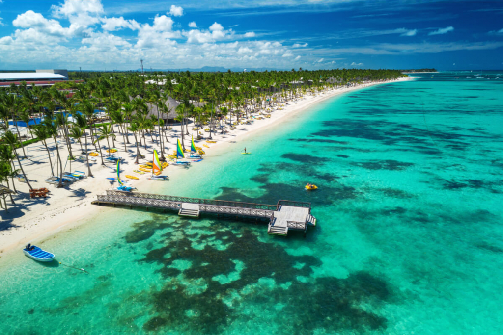
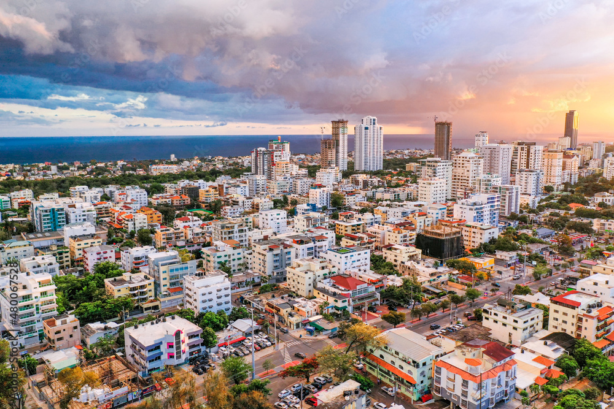
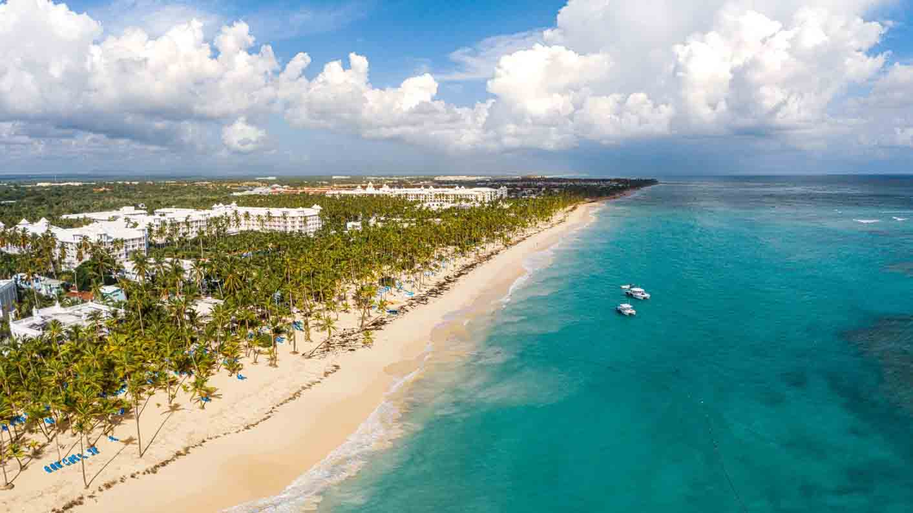
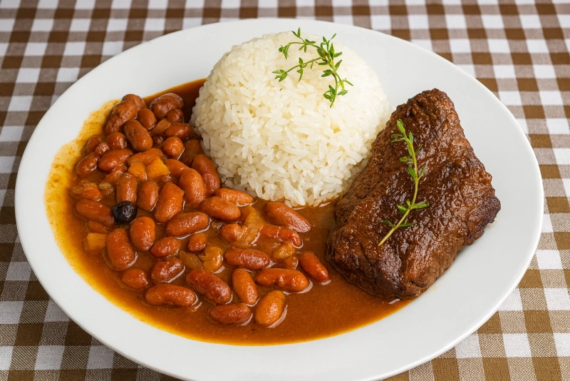

Sobre Mim
Nome: Ryan Cursino Moraes
Idade: 16 anos
Turma: 2ºG
O lugar dos meus sonhos
Nome do lugar:República Dominicana
Por que quero conhecer esse lugar?
Além de ser um país extremamente bonito, com um clima agradável e pessoas extremamente calorosas, há fatores pessoais que me fazem querer visitar esse país. Em 2023, um amigo meu foi até a República Dominicana, não sei ao certo qual estado, e quando voltou para o Brasil ele contou sobre sua experiência e sobre o quanto que a cultura de lá é interessante. Me falou das festas, das pessoas, das músicas, das praias, e principalmente do quão econômico é, uma vez que ele comentou sobre o quanto ele gastou pouco para comer muito e se divertir bastante!




Curiosidades sobre esse lugar
- Santo Domingos, capital da República Dominicana, é a capital mais antiga das Américas, a qual foi fundada em 1496
- O esporte nacional é o baseball, diferente do Brasil que tem como esporte nacional o futebol
- As paisagens dessa ilha foram cenários de grandes produções cinematográficas, como Jurassic Park e Piratas do Caribe